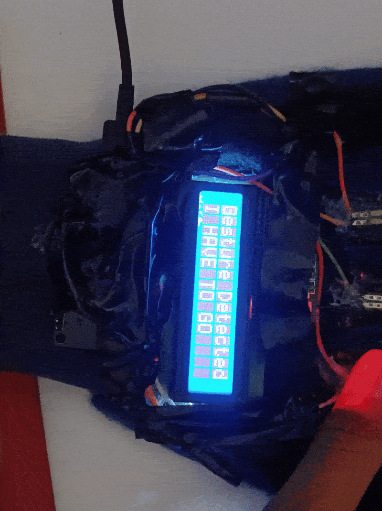

Physical hardware prototypes, edge AI models, embedded firmware, and reactive web platforms developed across healthcare, accessibility, STEM education, and industrial automation.

Robotics · Rice360 Semifinalist2025–2026
Team SignTalk Smart Glove
Wearable 9-DoF sensory smart glove translating Bengali Sign Language and gestural communication into real-time speech and text. Features custom piezoresistive flex sensors, MPU-6050 6-axis IMU, embedded C++ firmware, and edge ML. International semifinalist at Rice360 Global Health Tech Design Competition in Houston, Texas.
Browser-based interactive science laboratory with 40+ physics, chemistry, biology, and math simulations running at 60 FPS across desktop and mobile devices without requiring any installation.
Privacy-first digital mental wellness platform designed with zero user profiling or telemetry. Features guided wellness routines, peer connection bridges, and self-care resources.
Open-source developer toolsuite featuring StealthHumanizer (semantic text naturalization) and AI Code Trust Validator (static vulnerability, secret leakage, and AST analysis).
Autonomous differential-drive robot equipped with an 8-channel IR sensor array, dual high-torque N20 gearmotors, dynamic PWM braking, and mathematically tuned PID control loops achieving 2.2 m/s navigation stability.
Sun-tracking photovoltaic gimbal system utilizing 4-quadrant photoresistor differential arrays, dual SG90 micro-servos, and cloud power telemetry, boosting photovoltaic power generation efficiency by 28.4%.
Automated incubation monitoring system measuring culture turbidity and spectrophotometric optical density via calibrated photodiode arrays and thermal PID regulation.
Static analysis security engine running AST-level taint tracking, injection vulnerability detection, and cryptographic entropy auditing on source code repositories.
SAST SecurityAST ParserTaint TrackingPython
EdTech · Developer Ecosystem2026
Interactive Curriculum Tree
DevRoadmaps Learning Architecture
Interactive, role-based technical learning roadmaps and structured engineering curricula designed to accelerate self-taught developers into production-ready software engineers.
Web PlatformsCurriculum DesignInteractive UIOpen Education
Full-Stack · Cloud Architecture2025
Azure Cloud Architecture
Campus Sphere University Network
Modular cloud platform built for university campus community engagement, event synchronization, academic resource sharing, and student innovation team formation.
Next.jsAzure CloudPostgreSQLPrisma ORM
Dataset · Open Science2026
Open Kinematic Repositories
SignLanguage Dataset Hub
Curated repository of 9-DoF kinematic time-series data and spatial gesture vectors recorded across regional sign languages to support academic ML research.